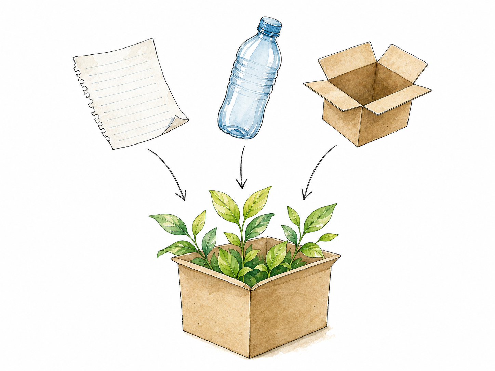
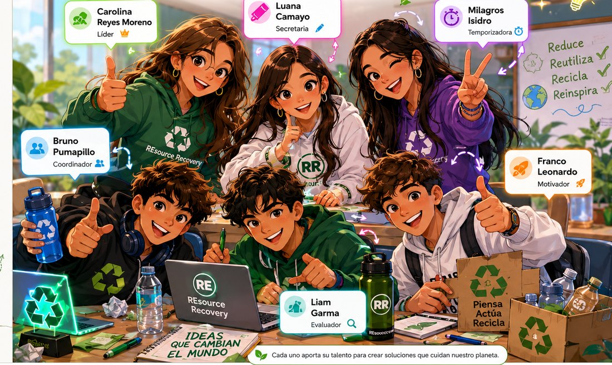

Segregación incorrecta
Los residuos se colocan en recipientes que no corresponden.
Aprende a segregar, reciclar y recuperar recursos
Este prototipo busca motivar a la comunidad a separar correctamente los residuos mediante educación ambiental, un juego de clasificación, puntos, logros y ranking.

Lo que se separa bien puede convertirse en un nuevo recurso.
02
Cuando todo termina en el mismo tacho, recuperar materiales se vuelve mucho más difícil.
Los residuos se colocan en recipientes que no corresponden.
Papel, cartón y plástico se mezclan con residuos generales.
Sin una meta clara, muchas acciones de reciclaje se abandonan.
Necesitamos aprender con ejemplos simples y participar activamente.
03
REsource Recovery propone una app educativa que enseña a separar residuos, permite registrar acciones de reciclaje, suma puntos y muestra un ranking para motivar la participación.
Reconoce cada material.
Elige el lugar correcto.
Valida tu acción.
Suma por ayudar.
Avanza en el ranking.
“Recuperar recursos también es cuidar el futuro”.
04
En el Perú cada color tiene un significado (NTP 900.058). Reconocerlos es el primer paso para separar bien.
Orgánicos
Cáscaras, restos de comida, hojas.Plásticos
Botellas, envases y bolsas limpias.Papel y cartón
Hojas, cajas, periódicos secos.Vidrio
Frascos y botellas de vidrio.Metales
Latas y tapas metálicas.No aprovechable
Residuos que no se pueden reciclar.Pon a prueba lo aprendido en el juego de clasificación.
05
Arrastra el residuo al tacho correcto (o toca el tacho). Acierta para sumar puntos.
Pulsa «Empezar» para recibir un residuo.
Pulsa «Comenzar trivia» para empezar.
06
Elige una acción y valídala con QR, cámara o registro manual.
Elige una acción para comenzar.
Sumaste puntos por ayudar al planeta.
07
Cada acción correcta mueve al equipo.
08
Somos REsource Recovery, un equipo de Séptimo B de Innova Schools comprometido con la educación ambiental y la recuperación responsable de recursos.
